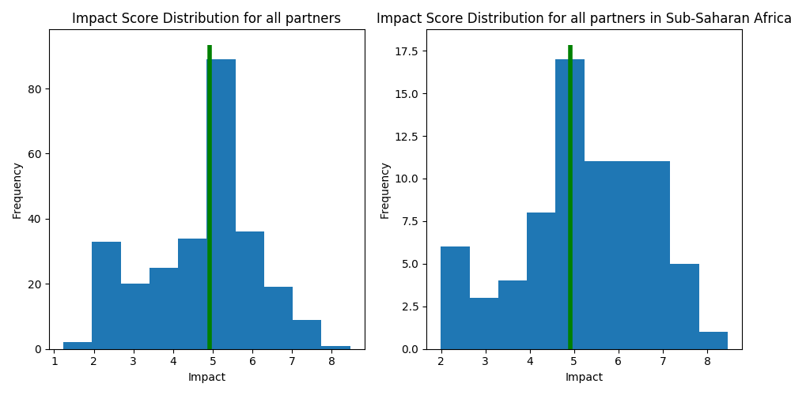
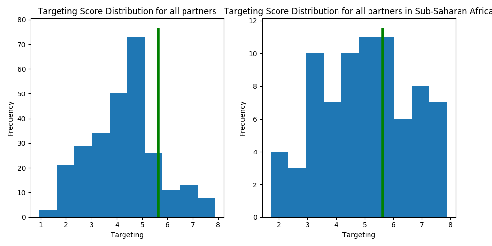
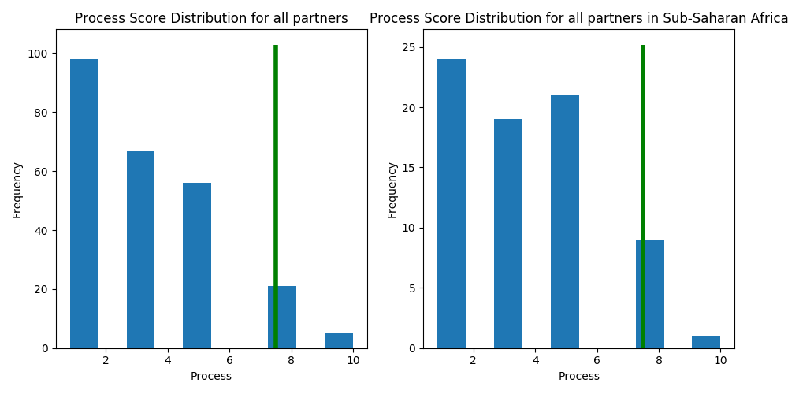
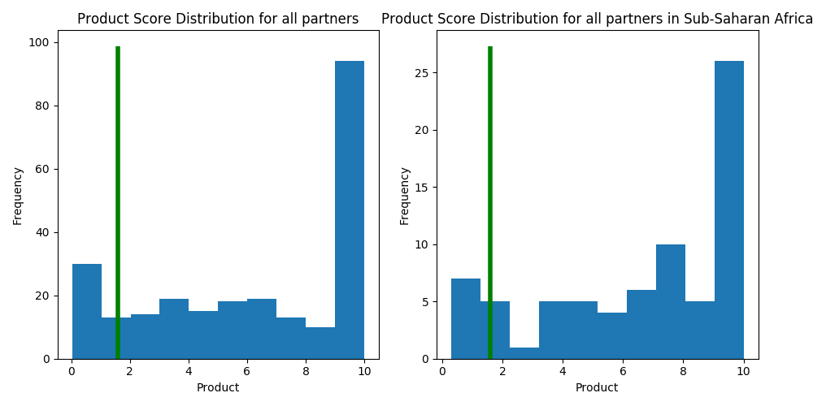

| Component Score | Median (All) | Percentile (vs. All) | Median (SSA) | Percentile (vs. SSA) | |
|---|---|---|---|---|---|
| Component | |||||
| Impact | 4.91 | 5.05 | 50.0% | 5.46 | 35.0% |
| Targeting | 5.64 | 5.03 | 82.0% | 5.03 | 61.0% |
| Product | 1.60 | 8.00 | 14.000000000000002% | 8.00 | 11.0% |
| Process | 7.50 | 3.33 | 92.0% | 3.33 | 92.0% |

The Impact Score is built on three subcomponent scores:
| Component Score | Median (All) | Percentile (vs. All) | Median (SSA) | Percentile (vs. SSA) | |
|---|---|---|---|---|---|
| Component | |||||
| Targeting | 5.64 | 4.36 | 82.0% | 5.03 | 61.0% |
| MPI | 4.66 | 3.88 | 89.0% | 3.88 | 69.0% |
| Findex | 5.26 | 7.37 | 52.0% | 7.37 | 41.0% |
| Outreach | 7.00 | 5.00 | 64.0% | 5.00 | 57.99999999999999% |

The Targeting Score measures how underserved the borrowers of the partner are, based on three components.
| Component Score | Median (All) | Percentile (vs. All) | Median (SSA) | Percentile (vs. SSA) | |
|---|---|---|---|---|---|
| Component | |||||
| Process | 7.5 | 3.33 | 92.0% | 3.33 | 92.0% |

The Process Score evaluates how client-centric a partner's operations are, including the level of nuance in their M&E systems, the appropriateness of their MIS system, and subjective assessments of price fairness and transparency.
| Component Score | Median (All) | Percentile (vs. All) | Median (SSA) | Percentile (vs. SSA) | |
|---|---|---|---|---|---|
| Component | |||||
| Product | 1.6 | 6.9 | 14.000000000000002% | 8.0 | 11.0% |
| Research | 1.6 | 7.0 | 16.0% | 7.0 | 13.0% |
| Sector | 0.0 | 0.0 | 24.0% | 0.0 | 27.0% |

The Product Score measures how valuable we expect a partner's financial services to be to borrowers, given the evidence in our sector research page.